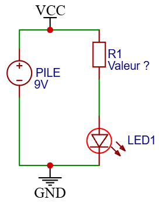
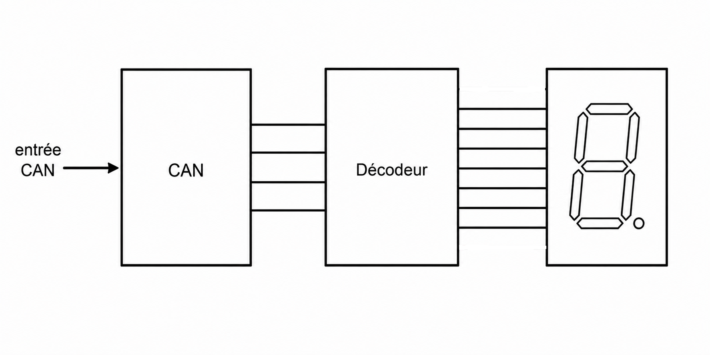
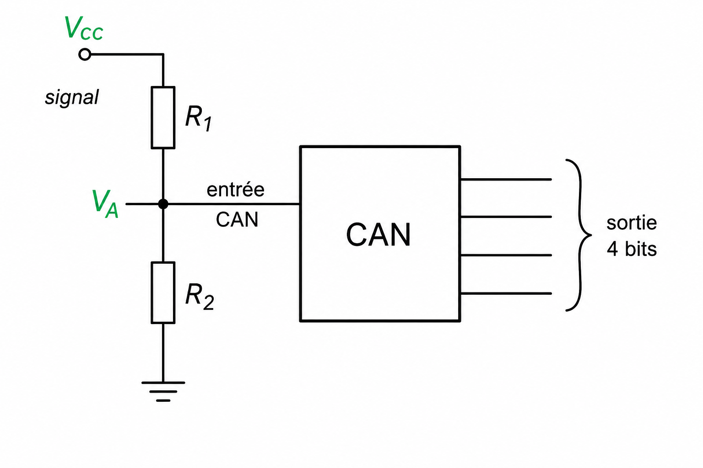

Réinvestir toutes les notions étudiées (loi d'Ohm, puissance, résistances équivalentes, pont diviseur et code couleur) dans un mini-projet de voltmètre numérique.
🔍 Situation problème
Comment concevoir un voltmètre capable de mesurer jusqu'à 10 V alors que l'entrée d'un CAN est limitée à 5 V ?
Schéma général du voltmètre à insérer ici.
1. Quiz de révision
Question
Réponse
Loi d'Ohm
U = ?
Puissance
P = ?
Résistances en série
Req = ?
Résistances en parallèle
1 / Req = ?
Pont diviseur
VA = ?
2. Application : circuit DEL

Pile 9 V + DEL + résistance de 330 Ω
Calculer le courant dans le circuit.
Calculer la puissance dissipée dans la résistance.
Choisir le code couleur de la résistance pour un courant de 20 mA.
3. Mini-projet : voltmètre numérique
Principe :
Alimentation Vcc
Pont diviseur de tension
Entrée CAN
Affichage 7 segments


Exercice
Vcc = 10 V
R1 = 10 kΩ
VA = 5 V
Déterminer R2.
VA = Vcc × R2 / (R1 + R2)
Choisir ensuite la valeur normalisée et son code couleur.
Afficheur 7 segments
Image d'un afficheur à insérer ici.
Chaque segment est une DEL.
Calculer la résistance de protection pour :
Alimentation : 5 V
DEL : 2 V
Courant : 15 mA
4. Préparation du projet de Terminale
Le voltmètre numérique servira de fil rouge pour le projet SIN de Terminale.
Loi d'Ohm
Puissance
Résistance équivalente
Pont diviseur
Code couleur
Méthode de résolution
Toujours suivre les étapes :
Écrire la formule.
Remplacer par les valeurs.
Calculer.
Vérifier les unités.
Choisir le composant adapté.
Récapitulatif des séances
Séance
Notions principales
Calculs
1
Loi d'Ohm - Puissance
U, I, R, P
2
Résistances équivalentes
Req, Itotal
3
Pont diviseur
VA, partage du courant
4
Code couleur
Valeur ↔ Couleurs
5
Synthèse + Voltmètre
Dimensionnement complet
📋 Synthèse
Les notions étudiées permettent de dimensionner un circuit simple.
Le pont diviseur adapte une tension à un CAN.
Chaque DEL doit être protégée par une résistance.
Le choix des composants est une étape essentielle de la conception électronique.